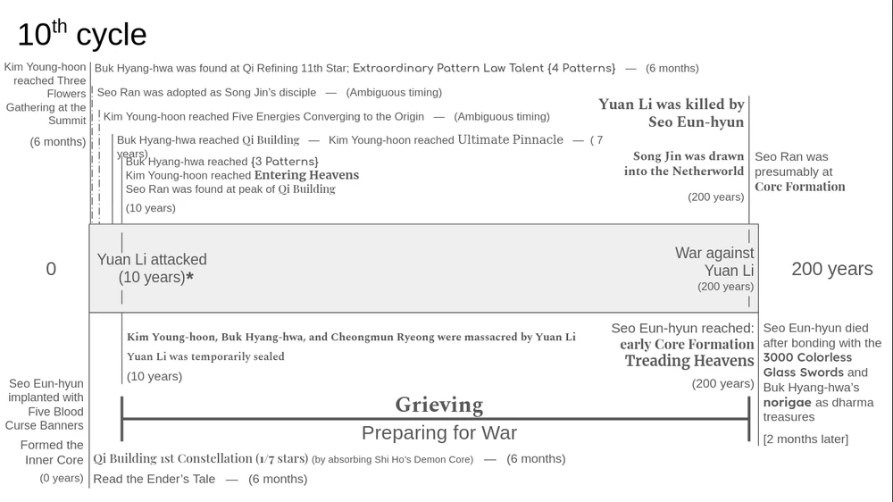
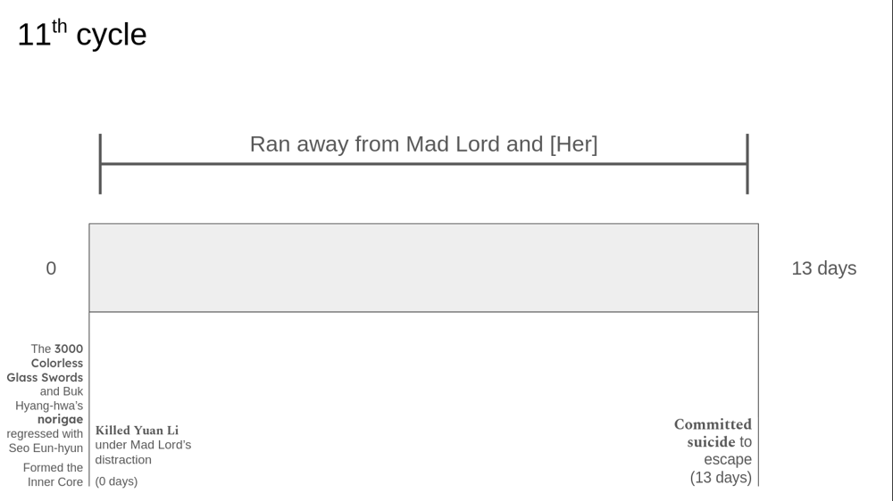

Fighting Yuan Li
10th to 12th Regression
10th Regression
Lotus
Eun-hyun's head does not burst immediately due to the Five Elements Blood Curse Banner implanted in him by Yuan Li. He attempts to free his consciousness, and succeeds in gaining 70% mobility. The fox senses him and attempts to thrash him, but Eun-hyun beats him and seizes the demon core. Mad Lord senses his fight and arrives. Eun-hyun sees his heart essence is a withered, rotting tree with a pulse of pink light. He suddenly realises Mad Lord can see his heart essence as well. Mad Lord is overjoyed and attempts to subdue Eun-hyun, when he senses the Blood Curse Banner. He then attempts to extract Yuan Li’s soul. This attracts Seo Hweol, who stops Mad Lord. Eun-hyun vomits when he sees Seo Hweol’s heart essence. Seo Hweol and Mad Lord begin an intense battle, which attracts the masters of the sects in the Head Realm. They pacify Mad Lord. Eun-hyun’s colleagues are once again kidnapped by the fated masters, except for Kim Yeon, who goes with the Righteous Path Alliance leader. Eun-hyun attempts to tell them about Yuan Li, but Seo Hweol stops him. He then gives Eun-hyun Summoning Wind, Dragon Transformation and the space-breaking bead with instructions to go to Seo Ran. Eun-hyun and Kim Young-hoon remain on Ascension Path for six months, during which Eun-hyun uses the Demon Core to reach Qi Building. Young-hoon is at Three Flowers. They leave Ascension Path and stop by Cheon-sak city, where they get water and a change of clothes. Eun-hyun leaves Young-hoon in Yanguo and goes to meet Seo Ran. Song Jin and Eun-hyun converse, at the end of which Song Jin gives them permission to search for the jade slip. Seo Ran and Song Jin bond over the former’s mother, and Song Jin takes Seo Ran as a disciple. He grants Eun-hyun three requests, which include the One Emotion Method and Silica Great Earth Secrets. Eun-hyun decides to use the Earth Secrets to help the Longevity Tree grow, and decides to seek out Cheongmun Ryeong for help. They decide to ask for an artisan in Cheon-sak city. They arrive at Four-Pattern Law Talent Buk Hyang-hwa’s shop, where a bet is taking place; the person who can bring out sixty percent or more out of her artifacts, will get to take a trip with her. None of the cultivators manage to reach sixty percent. Eun-hyun, disgusted by their amateur handling of the sword artifacts, displays 120% power, and thereby wins the contest. Hyang-hwa tries to get Eun-hyun to accept a magical artifact, but Eun-hyun refuses. Buk Hyang-hwa promises to make him an artifact he can’t refuse while working on the formation for the Longevity Tree.
Eun-hyun asks Song Jin for the Nether Crossing Ship to travel to the Serving Command Palace. Song Jin gives them three days. The head of the Cheongmun Clan, Cheongmun Jung-jin, accompanies them. Buk Hyang-hwa tells Eun-hyun about her norigae, and how she is betrothed to the one who carries it. Inside the Palace, Hyang-hwa admires the inlaid circuits. Jung-jin explores the upper floors, while Ryeong and Eun-hyun set the formation down. As Eun-hyun is to set down to external formation, Hyang-hwa follows him around, fiddling with the Palace’s circuits. He shows her one of Mad Lord’s mostly intact puppets. In her excitement, Hyang-hwa accidentally activates a golden order that lowers everyone’s cultivation by one realm and also activates guardian puppets. Hyang-hwa quickly deactivates the golder order. Jung-jin comes down and asks Hyang-hwa to reactivate the order as he noticed a barrier appear when it was active. They go to the top floor, but Jung-jin fails to break through. He tells them to go back down while he gathers enough strength.
On their last day in the Palace, Ryeong examines the barrier and tells Jung-jin where to strike. The shattering of the barrier changes the prohibition on the exterior of the Palace, which prompts Song Jin to leave. Meanwhile, Jung-jin, Ryeong, Hyang-hwa and Eun-hyun enter the control room. Eun-hyun discovers a line of text asking why ascension blessing are prepared[1] They find two teleportation arrays. Jung-jin takes Ryeong and escapes, but cannot return as the array deactivates. Eun-hyun is forced to reveal his Core Formation prowess and the Formless Sword. Buk Hyang-hwa decides to create an artifact perfectly suited for the Formless Sword, but Eun-hyun gives her three conditions-he should be able to craft the sword, with ordinary material, and it should encompass all the changes of his Formless Sword. They decide to take the “trip” Eun-hyun won. They go to see “World’s End”, where Eun-hyun is stunned to discover the world is flat. They see a village plagued by a centipede demon and decide to help it. The centipede claims eating human flesh will let it hatch a child with a Demon Core. They kill the centipede out of pity. In a fit of spite, the centipede uses its dying breath to make the nearby poisonous beasts attack the village. The village hold a festival, which Hyang-hwa takes part in. Eun-hyun is guarding the village when he encounters a child with a book, who claims to be waiting for her [Sister]. Eun-hyun is shocked to see the first chapter in the book is titled “the Ender’s Tale”[2]. The book also contains a map of the Head realm, including Ascension Path and Serving Command Palace. It also shows the sun and moon as a “pair of eyes”, leaving Eun-hyun with a sinister feeling. Eun-hyun takes the girl to the festival, where he shares the Twin Immortals Dance with Hyang-hwa. He later deconstructs the dance into a spear technique.
On reaching Cheon-sak city, Jung-jin apologies to Hyang-hwa and Eun-hyun and promises them a favour. The next day, Byeok Mun-seong kidnaps Hyan-hwa to forcibly advance her Four-pattern talent to a Three-pattern. She is rescued by Eun-hyun. They set down the completed formation at Hyang-hwa’s mother’s grave. Five years later, she advances to Qi Building. Ryeong leaves for the Cheongmun clan to test the formation in a spiritually similar environment. Eun-hyun decides to stay in the city, as he has fallen in love with Hyang-hwa. Days later, Young-hoon appears and challenges Eun-hyun to a match. Young-hoon has reached the limits of Ultimate Pinnacle but is yet to reach Entering Heavens. He teases Eun-hyun about Hyang-hwa, who he has yet to confess to. Hyang-hwa shows Eun-hyun the repaired bee puppet, which comes with a teleportation function. He realises the puppet is based on the seven emotions. Hyang-hwa studies the puppet and realises the Mad Lord was trying to break taboo through his puppets. She uses this inspiration to enhance her design for Eun-hyun’s artifact.
Another five years pass. Eun-hyun ends up managing the artifact shop. Their neighbours call Eun-hyun and Hyang-hwa a couple. Young-hoon enters Entering Heavens and immediately spars Eun-hyun. Towards the end of their spar, Eun-hyun tells Young-hoon he plans to confess to Hyang-hwa. Cheongmun Ryeong also returns, and both him and Young-hoon lampoon Eun-hyun’s single status. Eun-hyun attempts to confess to Hyang-hwa, but she asks him to wait until tomorrow, so she can complete the design for his artifact. The next day, Hyang-hwa’s father, Buk Joong-ho, prepares his wife’s grave for their wedding ceremony. Just before confessing to Hyang-hwa, Eun-hyun smells blood. Yuan Li has arrived to retrieve his blood soul. They fight bitterly against Yuan Li, but nearly everyone in Cheon-sak city dies, and Young-hoon is fatally wounded. Hyang-hwa and Joong-ho teleport Eun-hyun out of the city. Eun-hyun, who has run out of spiritual power, rushes back. He discovers everyone except Hyang-hwa is dead; Hyang-hwa is dying. With her last breath she tells Eun-hyun she never loved him, but Eun-hyun can see her intent is still dyed a clear pink(love).
With Hyang-hwa’s death, Eun-hyun’s tears turn black. Curses pour from his seven orifices as he swears to kill Yuan Li.
Fighting Yuan Li
Eun-hyun encounters Jung-jin and displays his strength, winning the right to participate in the attack on Yuan Li. All the Core Formation cultivators gather and manage to seal Yuan Li within his dharma treasure, which is a black castle. Yuan Li mocks them and says he will be free in two-hundred years as then the Serving Command Palace will appear over his castle, breaking all seals near it. The entire continent prepare for the final battle with Yuan Li. While leaving the scene, Eun-hyun talks to Wolryang, the great-grandfather of Hyang-hwa’s original betrothed, whom Yuan Li killed ten years ago. Eun-hyun returns to Cheon-sak city, to collect the remains of his loved ones. He discovers Young-hoon’s Inner Core is gone. He collapses in grief, emitting more than three thousand curses. He opens Hyang-hwa’s gift, which is a blueprint for a flying sword artifact called the Colourless Glass Sword. He then leaves to attend Ryeong’s funeral.
During a strategy meeting, Eun-hyun realises the golden order in the Serving Command Palace can lower Yuan Li to Core Formation while he can still use martial arts. They use the Nether Crossing Ship to go to the Palace. Eun-hyun asks Seo Ran to teach him how to use the space-breaking bead, which he had kept all this time. Seo Ran is shocked and tells him to wait. Eun-hyun displays his full strength under the golden order and sets down the formation for the Longevity Tree. On the return trip, Song Jin tells Eun-hyun the bead can only be activated by one possessing the “True Origin blood” of a Sea Dragon, and that the bead in question was for Seo Ran. Eun-hyun asks Song Jin for help. The latter says Seo Ran can help him more, as the sealed Sea Dragon Palace should hold items antagonistic to Yuan Li.
Eun-hyun helps Seo Ran break the seal placed by Seo Hweol. Seo Eun-hyun is surprised to see the interior of the Sea Dragon Palace matches the Serving Command Palace. Seo Ran tells him Seo Hweol claimed this would have an effect of “mental awakening”. As Eun-hyun wanders the Sea Dragon Palace, he comes across a hallway with no prohibitions. He enters what he presumes is the astronomy room. He is hit by a curse that leaves a message. [3] Eun-hyun follows the message and looks under the slabs, to find Astronomer Jeon Hyang’s diary, left for Seo Ran. From the diary, he learns about how the sun and moon do not exist in the realm, and hints about the true nature of both this world and Seo Hweol. When Eun-hyun closes the diary, Seo Hweol’s remnant consciousness appears, causing the dharma treasures in the Sea Dragon Palace to go berserk. Song Jin rescues them.
What You Trampled On / The Path You Have Tread
Ten years later, Eun-hyun goes to a meeting of Core Formation Cultivators. He learns Wolryang is the great-grandfather of Hyang-hwa’s original betrothed, whom Yuan Li killed ten years ago. Cheongmun Jung-jin proposes the plan of fighting within the Serving Comamand Palace. The cultivators agree to meet again in two hundred years.
Two hundred years later, Byeok Mun-seong, along with two female cultivators, goes to fetch Eun-hyun. Eun-hyun is staying within the cave of the centipede he had killed with Hyang-hwa. His prowess appears to be at Core Formation despite him being in Qi Building. Byeok Mun-seong notices Eun-hyun has left behind a carved a glass sculpture of himself and Hyang-hwa dancing the Twin Immortals Dance. He keeps the sculpture.
Eun-hyun arrives at Cheon-sak city. He takes the 3000 most intact glass-sword-grave markers and carves the circuits Hyang-hwa designed into each of them. He stores the newly made artifact. He notices Mun-seong’s consciousness is also the deep blue of sorrow, and they promise to mourn together once she is avenged.
More than 200 Core Formation cultivators gather in front of Yuan Li’s black castle. The Serving Command Palace begins its descent, freeing Yuan Li. The cultivators begin to harry Yuan Li with varying degrees of success. Yuan Li suddenly notices they are creating an altar for a Core Formation advancement. He notices the gates of the Palace opening, so ignores it. From within the Serving Command Palace, the true Seo Eun-hyun emerges, revealing the one outside to be a cursed doll. Eun-hyun begins his advancement ritual for Core Formation, while the other hold Yuan Li back. After the ritual, Heavenly Tribulations strikes Eun-hyun, shocking all present. Eun-hyun uses the Tribulation to sap Yuan Li’s strength. The lightning drops until all of Yuan Li’s defensive treasures are broken and Eun-hyun uses him as a shield. Eun-hyun uses his newly acquired Dan Fire to turn the Colourless Glass Swords into dharma treasures. Yuan Li is pushed into the Palace, and the golden order is activated. Yuan Li begins the fight, mainly against Eun-hyun. Manli Min-lap and Byeok Cheon-gi begin infusing energy into a cannon and the Heaven Striking Talisman containing the strike of a Heavenly Being respectively. He reveals Young-hoon's Inner Core within one of his blood spirits. Eun-hyun reclaims the Inner Core, striking a severe blow on Yuan Li. Cheon-gi launches the talisman, and Min-lap fires the cannon. However, it is revealed the talisman in fact was the Heaven Sealing Talisman, one that granted the target the body of a Heavenly Being. The Byeok Clan, Five Eastern Lords, Jinlu Clan, Makli Clan and others reveal they serve Yuan Li. Yuan Li is unharmed due to the talisman. Buk Mun-seong appears and uses the Heaven Striking Talisman to shatter Yuan Li’s defense, with the help of the young cultivators of the Byeok Clan. Eun-hyun uses the moment to land a strong hit on Yuan Li using the All-Heavens Sword, the final form of the Colourless Glass Sword. Yuan Li uses his powers to kill a huge number of cultivators and absorbs their power. He summons his blood body, and transfers himself into it. He begins using Summoning Wind, True Blood Transformation. Seo Ran appears and uses the effects of Summoning Wind, Blood Core Coagulation to control Yuan Li. He summons the spirits of all Yuan Li has killed over the years, and allows them to take their revenge on Yuan Li. He channels their strength into Song Jin, who temporarily regains his Heavenly Being Cultivation. Song Jin strikes him once, destroying half of the Palace, and leaves. Yuan Li sacrifices part of his Nascent Soul to claim the Serving Command Seal, and “fate” starts to ridiculously favour him. He is “coincidently” freed from Seo Ran’s control, and all of Eun-hyun’s strikes are “coincidently” blocked by debris.
Eun-hyun comes across a dying Mun-seong, who tells him he loved Hyang-hwa as well. He begs Eun-hyun to avenge her for both of them. Eun-hyun tells Mun-seong he understands, and to rest. He then enters Yuan Li’s black castle. Song Jin tells Eun-hyun to protect Seo Ran. He enters with the Nether Crossing Ship. He forcibly activates the space-breaking bead and commands the Ship to self-destruct, passing on. Yuan Li has lost a large amount of power, but a remnant consciousness of Seo Hweol protects him. Eun-hyun launches Foolish Old Man Moves Mountains. During the last fight, he raises his martial realm to Treading Heavens Beyond the Path. He creates the Black Ghost Curse Banner, and kills Yuan Li. He comforts Seo Ran in the aftermath of Song Jin’s death, and leaves with Yuan Li’s head. As he travels to Cheon-sak city, the Curse Banners begin evolving into something much more sinister.
Over two months later, he reaches his destination. He places the head down and goes to Hyang-hwa’s workshop. He meets her remnant spirit. They dance together one last time. They tell each other they love them. The Blood Curse Banners Eun-hyun left behind turn into the White Orchid Blessing Incantation. Hyang-hwa passes on. As Eun-hyun dies, the Colourless Glass Swords return to him.
Timeline: 10th Cycle
11th Regression
Running from the Mad Lord
Eun-hyun realises the Colourless Glass Swords have returned with him. He realises the White-Red wine helped attach the Swords to his soul. He rushes the fox and defeats it extremely flashily to get the Mad Lord’s attention. He tells the Mad Lord how he and Buk Hyang-hwa killed the centipede demon, and her subsequent death. The Mad Lord tells Eun-hyun to lead the way to Yuan Li. He breaks the defensive barrier on Yuan Li’s black castle. Seo Hweol senses this and rushes to the spot. The Mad Lord and Seo Hweol engage in battle while Eun-hyun goes to kill Yuan Li. During the one-sided smack-down, Eun-hyun asks Yuan Li if he thinks life is a blessing, to which Yuan Li agrees. Eun-hyun tells him he believes life is neither a blessing nor a curse, and kills him. He shows Yuan Li’s head to Seo Hweol and the Mad Lord. Seo Hweol is initially disappointed, but later praises Eun-hyun for having killed a massacrer. He then leaves. Eun-hyun attempts to slip away, but the Mad Lord senses him and attempts to catch him to turn him into a puppet. Eun-hyun flees, hoping the Mad Lord will let him go in order to participate in the Ascension. Eun-hyun manages to stay free for ten days, before Mad Lord unleashes [Her], a puppet at the Four-Axis Stage. Eun-hyun contemplates suicide, but decides to drink White-Red wine to make sure the Swords remain with him. Eun-hyun breaks into the Nether-Crossing Ship, takes control of it, breaks into the Serving Command Palace, and drinks the wine. However, the attraction force from [Her] is overwhelming. Eun-hyun mimics the Surpassing Radiant Saber and ‘cuts’ through space to reach Song Jin. He gets Song Jin to attach a ghost to his soul and promptly commits suicide
Timeline: 11th Cycle
12th Regression
Ascension
Upon awakening, Eun-hyun realises the ghost attached by Song Jin had been torn away. Instead of hitting his companions’ pressure points, he lets them wake up and leads them to the cave. Once they fall asleep, he meets the fox and forces it to give up its Demon Core. He keeps the now tiny fox and returns with it to the cave. He does not take any action as all his colleagues are snatched up while the Mad Lord throws him, the fox and Young-hoon into a spatial rift. They teleport underground. Eun-hyun digs them out. While Young-hoon is asleep, he rapidly arranges all the necessities for the world. He returns the fox’s Demon Core and orders it to protect Young-hoon. He then leaves with the intention to study the Ascension Gate. On the way, he looks in on his disciples, exterminates the Makli Clan, introduces Song Jin to Seo Ran, guides Seo Ran to Jeon Hyang’s diary, and attacks Yuan Li. Overpowered, Yuan Li swears on the Nether Crossing Ship to follow Eun-hyun’s commands. He discovers the remnant warning that was on the stele near Ascension Path. [4]
On interrogating Yuan Li, Eun-hyun learns the black castle was a shrine to Yang Su-jin, and Yuan Li is descended from the shrine keepers. He also reveals the names of the Middle Realms; Blood Yin(which he intended to ascend to), True Devil, Ancient Force, Nether Ghost, Purple Gold, and Bright Cold(connected to the Ascension Gate). On Eun-hyun’s further questioning, he reveals he has yet to ‘synthesize’ his cultivation into the Blood Body. Song Jin shifts through Yuan Li’s mind and reveals all information related to Seo Hweol has been ‘erased’. Eun-hyun then kills Yuan Li. He claims the Blood Body as spoils of war. He returns Wolryang’s norigae. When he goes to meet Hyang-hwa, he realises she is now a completely different person. Their norigaes merge into one. He leaves the strengthened norigae with Hyang-hwa. Back on the Ship, Eun-hyun asks Song Jin for the Devil Legion Terracotta Scroll.
Eun-hyun controls the Blood Body to exhort the traitorous Byeok clan. He then goes with the stones to the Cheongmun Clan and tells them to support Cheongmun Ryeong. He then goes to the traitorous Jinlu Clan and tells them to serve the Cheongmun Clan. He visits the village where he and Hyang-hwa fought together, and asks for the book of fairy tales he came across last time, but discovers it has vanished. On asking about the child’s sister, her father says she is an only child. This confuses Eun-hyun, and he then seems to remember the child was waiting for her parents last cycle.
Eun-hyun goes to kill the centipede demon. The centipede begs Eun-hyun to take its offspring and turn them into intelligent beasts. He accepts and takes all the eggs.
In the serving command palace, Eun-hyun stores Immortal Demon Bamboo(a smoking-pipe for awakening Demon Beasts), some talismans, and drinks some White-Red wine. He then acquires the Serving Command Seal. On seeing the blessing bestowed on Eun-hyun, Song Jin remarks Eun-hyun has a strong fate. Eun-hyun gives him the blueprints for the Longevity Tree Formation and asks him to deliver one to Kim Young-hoon. They then arrive at Ascension Path. Eun-hyun blows some smoke to help awaken the centipedes. One of them clings to Eun-hyun, and on Song Jin’s advice, he decides to keep it. One attempting to examine Ascension Gate, Eun-hyun sees a message from Yang Su-jin, who tells him to depart from this “ominous head”[5]. Ascension Gate swallows Eun-hyun, ejecting the Serving Command Seal, and closing. Eun-hyun has begun his ascension
During the ascension, he turns back to see the world he left behind as a gigantic jade something before losing consciousness. He wakes up with no recollection of what he saw. He uses all his talismans to arrive safely, right behind the Heavenly Being cultivators who took his colleagues. A Four-Axis wood-man cultivator attempts to intimidate him, but is rebuffed by the newly advanced Heavenly Being cultivators from the same realm as Eun-hyun. The wood-man cultivator stops and says they must be from the Head Realm. The ascenders from the Head Realm offer to take Eun-hyun into their respective sects. Eun-hyun lets the Formless Sword melt into his body. This ‘aura’ is detected by the wood-man who accuses Eun-hyun of being a ‘Heart Tribe spy’ and kills him.
Timeline: 12th Cycle